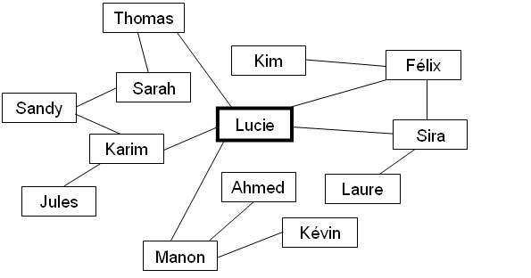
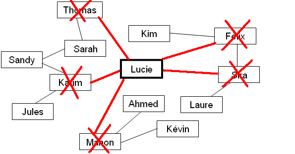

Lucie et ses amis se sont inscrits sur un réseau social. L'illustration ci-dessous montre le réseau des amis de Lucie, et des amis de ses amis.

Sur cette illustration, deux personnes sont reliées par un segment si elles sont amies sur le réseau social. Ainsi, Sira est l'amie de Lucie, mais Jules n'est pas un ami de Lucie.
Ci-dessous, cochez les cases devant les noms des personnes qui ne sont pas des amis de Lucie sur ce réseau social.
Les amis de Lucie sont ceux qui sont reliés à elle sur l'illustration. On peut donc rayer tous les noms qui sont reliées à Lucie. Les noms qui restent seront ceux qui ne sont pas ses amis :

Les personnes qui ne sont pas des amis de Lucie sont donc Sandy, Sarah, Jules, Kim, Ahmed, Laure et Kévin.
Cet exercice consiste essentiellement à comprendre la signification de la représentation graphique d'un objet essentiel en informatique : le graphe. Les personnes du réseau social sont les noeuds du graphe, et les liens d'amitié entre personnes sont les arêtes du graphe.
Les graphes donnent une représentation abstraite des relations entre objets de toutes sortes. Ils sont utiles, par exemple pour modéliser des réseaux d'amis ou de télécommunications. La transition entre un objet réel et un modèle n'est pas toujours facile. Le modèle abstrait peut permettre de voir des structures cachées.